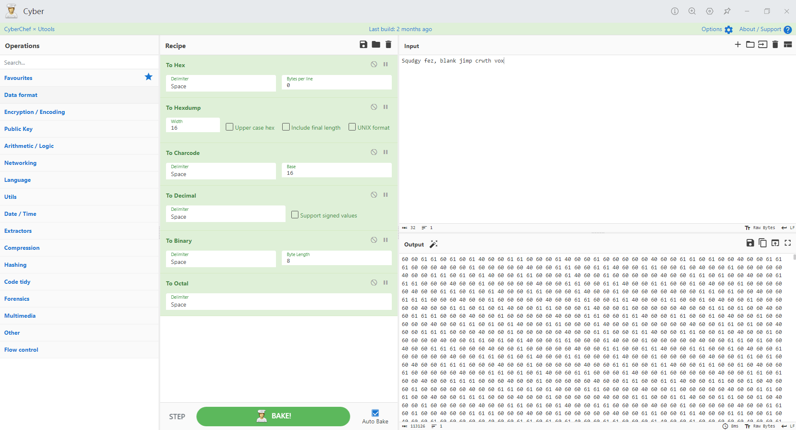
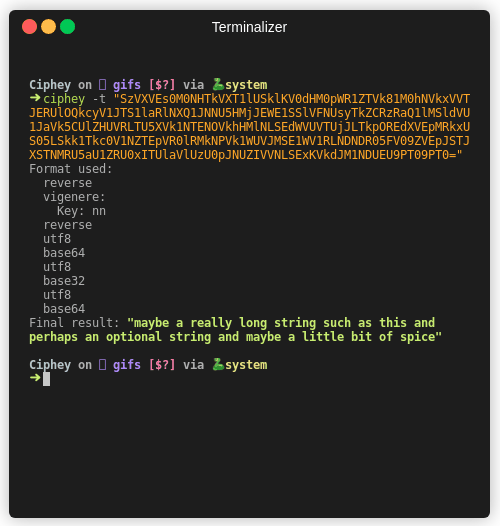
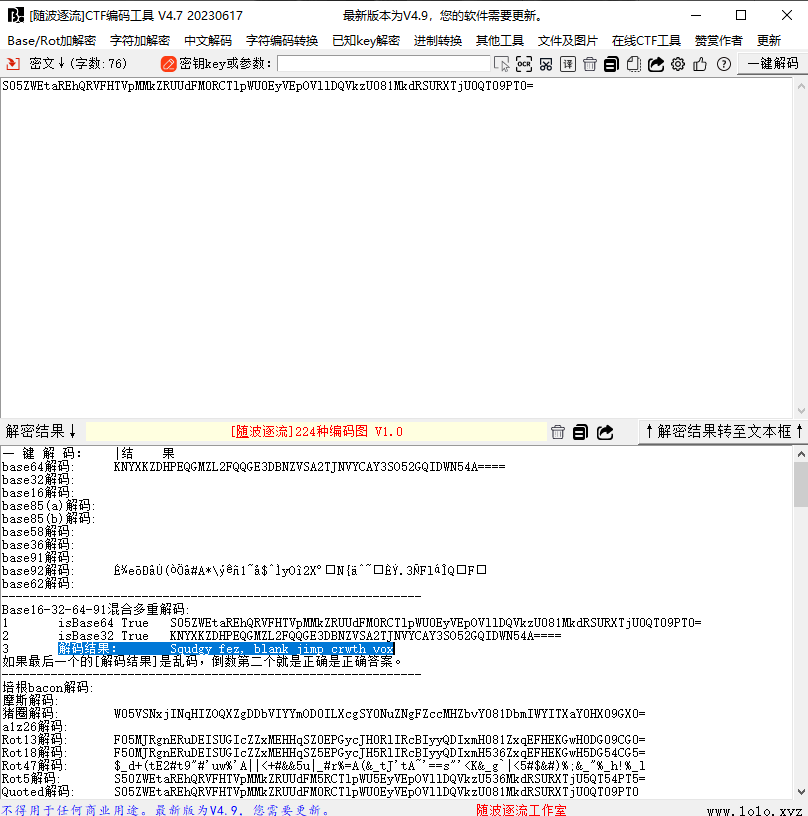
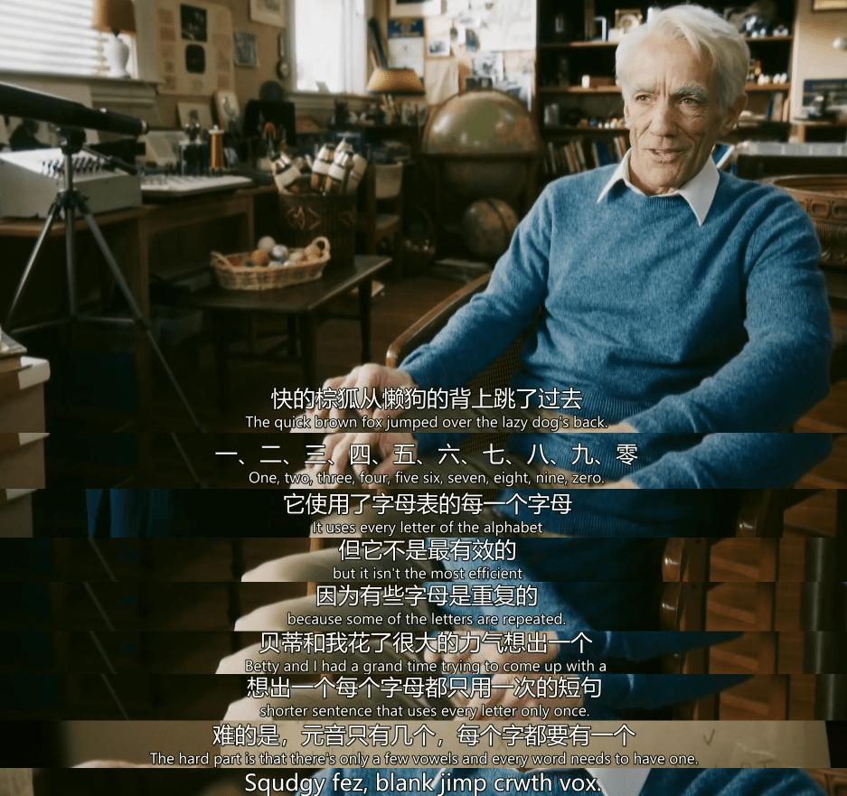
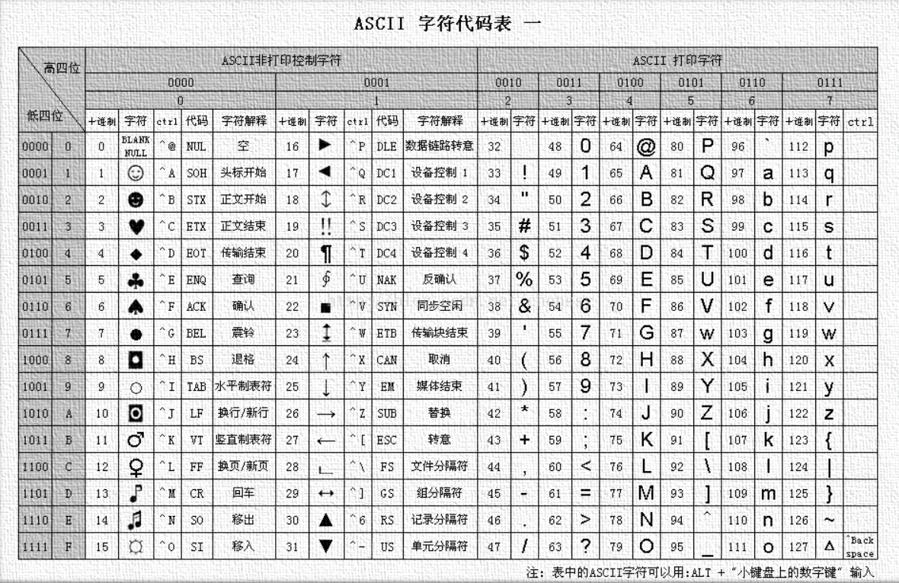
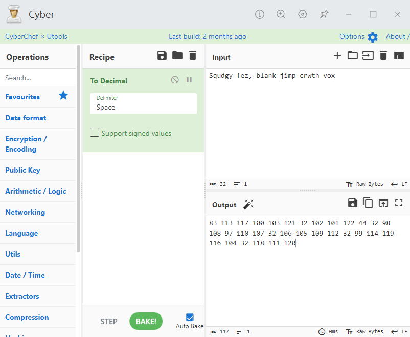
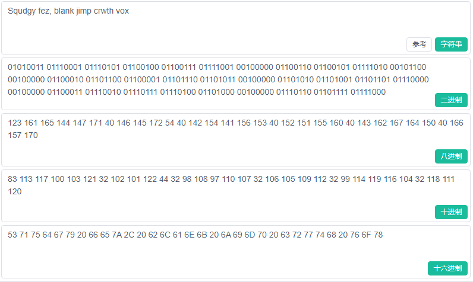
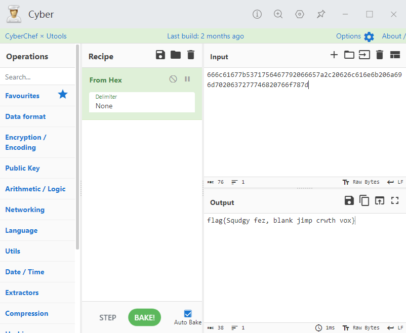
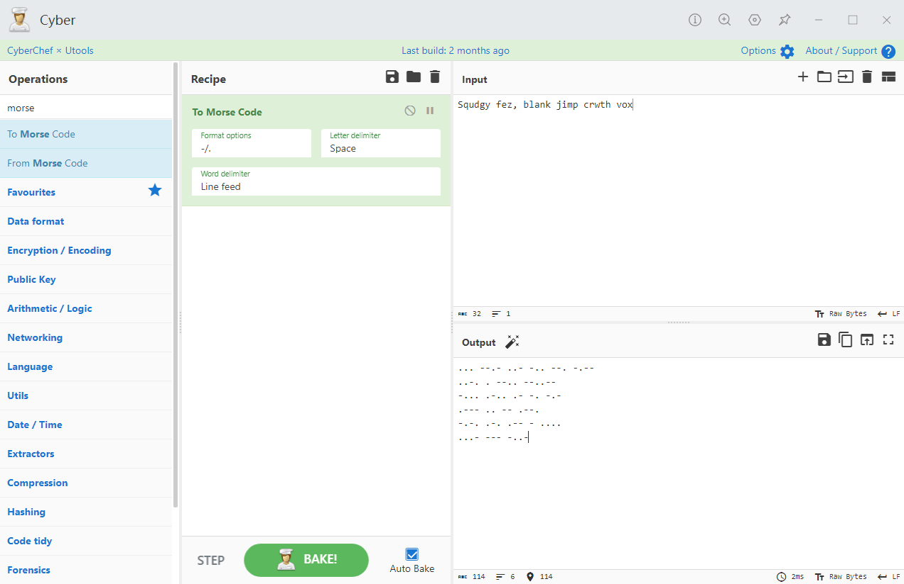

编码 / Encoding¶
简述¶
编码不同于密码，他的关键不是隐藏信息，而是处理信息，是信息的另一种表示形式，用于解决一些特殊字符、不可见字符的传输问题。
将原始信息变成编码信息的过程为 「编码 Encoding 」，反之，将编码信息转化回原始信息，转化的过程称之为 「解码 Decoding 」。
编码很少单独作为题目出现在CTF中，除开T0级别的签到题目，多数情况都贯穿CTF的各个方向，包括但不限于 杂项 和 密码学。
工具¶
编码是一个很庞大的家族，即使我们能记住每个编码的特征，但也无法做到颅内编译，所以使用工具来处理编码是极其必要的。
CyberChef¶
CyberChef 是CTF中最常用的编码解码工具之一，内含多种编码和解码方式。

Ciphey¶
Ciphey is a Fully automated decryption/decoding/cracking tool using natural language processing & artificial intelligence, along with some common sense.

随波逐流¶
[随波逐流]CTF编码工具 由随波逐流编写开发，CTF编码工具为用户提供丰富的离线符编码进行转换，加密解密功能。

常见编码¶

接下来我们使用经典的通信测试信息—— " Squdgy fez, blank jimp crwth vox " 来给大家简述一下一些常见的编码。
ASCII 编码¶

一种使用指定的 7 位或 8 位二进制数组合来表示 128 或 256 种可能的字符的编码方式。
Squdgy fez, blank jimp crwth vox
上面的ASCII表使用的「十进制 Decimal 」来表示对应的值，这也是我们通常使用的方法：
"Decimal" 来自拉丁词 "decimus"，意为 "tenth"（第十）。在数学和日常生活中，我们使用的最常见的数字系统是十进制（decimal）数字系统。

当然，您也可以将其转换为其他进制表示：

Hex¶
「Hex Hexadecimal 」 意为 "十六进制"，虽然十六进制经常用于与编码相关的上下文中，但它并不是一种编码，只是一种数值表示法。只不过在CTF中有时会以签到题目出现，比如：

From Hex to String ,目前在赛题已经不在常见，而在此写出的目的也是为了提醒大家，良好的计算机基础，包括对各种进制的熟悉程度在CTF中也是相当重要。
Base家族¶
Base家族的编码方式提供了一种方法，将原始的二进制数据转换成一个更“友好”的、由特定字符集组成的字符串格式，比如base64、base32、base16可以分别编码转化8位字节为6位、5位、4位。16,32,64分别表示用多少个字符来编码。
以Base64为例：
编码过程：
- 将输入数据分割成长度为 3 的字节组。
- 将这三个字节转换为4个6位的组。这样做是通过将这三个字节（总共24位）重组为4个6位的数值。
- 使用这4个6位的数值作为索引，从BASE64字符集中选择对应的字符。
- 如果输入数据的字节长度不是3的倍数，就在输出的BASE64字符串后面加上一个或两个'='字符作为填充。
源文本：Go
G -> 01000111
o -> 01101111
得到8位binary：01000111 01101111
分组为6位binary：010001 110110 1111
补0：010001 110110 111100
对应十进制：17 54 60 (为数组下标)
ABCDEFGHIJKLMNOPQRSTUVWXYZabcdefghijklmnopqrstuvwxyz0123456789+/
-----------------↑------------------------------------↑-----↑---
010001 -> R
110110 -> 2
111100 -> 8
查表得：R28
补齐得：R28=
- 把 Base64 字符串去掉等号，转为二进制数
- 从左到右，8 个位一组，多余位的扔掉，转为对应的 ASCII 码
密文： R28=
去掉=：R28
对应十进制（ASCII 码）： 17 54 60
还原位6位二进制 ： 010001 110110 111100
重新分组为8位二进制： 01000111 01101111 00
8位二进制转换为对应ASCII码： G o /(丢弃不完整部分)
得到原文：Go
其他Base编码过程同理，这里给出一些常见base的字符集和对应说明，读者可以自行尝试。
| 编码 | 字符集 | 备注 |
|---|---|---|
| BASE2 | 01 |
二进制 |
| BASE16 | 0123456789ABCDEF (或0123456789abcdef) |
十六进制 |
| BASE32 | ABCDEFGHIJKLMNOPQRSTUVWXYZ234567 |
|
| BASE32Hex | 0123456789ABCDEFGHIJKLMNOPQRSTUV |
Base32的变体 |
| BASE58 | 123456789ABCDEFGHJKLMNPQRSTUVWXYZabcdefghijkmnopqrstuvwxyz |
注意，这个集合避免了容易混淆的字符，例如数字“0”和大写的字母“O”;主要用于比特币地址 |
| BASE64 | ABCDEFGHIJKLMNOPQRSTUVWXYZabcdefghijklmnopqrstuvwxyz0123456789+/ |
|
| BASE64URL | ABCDEFGHIJKLMNOPQRSTUVWXYZabcdefghijklmnopqrstuvwxyz0123456789-_ |
适用于URL和文件名 |
| BASE85 | !\"#$%&'()*+,-./0123456789:;<=>?@ABCDEFGHIJKLMNOPQRSTUVWXYZ[\\]^_abcdefghijklmnopqrstu |
例如Adobe's ASCII85 |
URL编码¶
URL编码,也被称为百分号编码，是一种编码机制，用于将不安全或特殊的字符转换为%后跟其ASCII的十六进制表示，以确保URL的安全传输。
通常的url编码只会处理符号和不可见字符，比如 Squdgy fez, blank jimp crwth vox
会被编码为 Squdgy%20fez%2C%20blank%20jimp%20crwth%20vox (普通类型)
但在CTF中我们可能会将其编码为
%53%71%75%64%67%79%20%66%65%7a%2c%20%62%6c%61%6e%6b%20%6a%69%6d%70%20%63%72%77%74%68%20%76%6f%78 (复杂类型)
甚至出现多次Url编码的情况，当然这可能存在一些恶趣味，但是在渗透过程中，多次url编码确实是一种有效的Bypass手段。
其他编码¶
原文：Test@123 / 测试@123
- Unicode编码
# 默认模式
\u0054\u0065\u0073\u0074\u0040\u0031\u0032\u0033
# 宽字符
\u{54}\u{65}\u{73}\u{74}\u{40}\u{31}\u{32}\u{33}
# 编码模式
U+0054U+0065U+0073U+0074U+0040U+0031U+0032U+0033
# HTML实体 十进制
Test@123
# CSS实体 十六进制
\0054\0065\0073\0074\0040\0031\0032\0033
-
XXencode编码
-
UUencode编码
-
Escape/Unescape编码
-
Quoted-printable 编码
-
HTML实体编码
-
shellcode编码
莫尔斯电码¶
「 摩尔斯电码 Morse code 」也被称作摩斯密码，当然虽然有密码一词，但其并不属于加解密算法，而是一种经典的编码方式。
A .- N -. . .-.-.- + .-.-. 1 .----
B -... O --- , --..-- _ ..--.- 2 ..---
C -.-. P .--. : ---... $ ...-..- 3 ...--
D -.. Q --.- " .-..-. & .-... 4 ....-
E . R .-. ' .----. / -..-. 5 .....
F ..-. S ... ! -.-.-- 6 -....
G --. T - ? ..--.. 7 --...
H .... U ..- @ .--.-. 8 ---..
I .. V ...- - -....- 9 ----.
J .--- W .-- ; -.-.-. 0 -----
K -.- X -..- ( -.--.
L .-.. Y -.-- ) -.--.-
M -- Z --.. = -...-
下面是一个示例：
原文 Squdgy fez, blank jimp crwth vox
编码后 ... --.- ..- -.. --. -.--:..-. . --.. --..--:-... .-.. .- -. -.-:.--- .. -- .--.:-.-. .-. .-- - ....:...- --- -..-

敲击码¶
「 敲击码 Tap code 」是一种以非常简单的方式对文本信息进行编码的方法。因该编码对信息通过使用一系列的点击声音来编码而命名.
敲击码是基于5×5 方格 波利比奥斯方阵 来实现的，不同点是是用K字母被整合到C中。
敲击码表:
小结¶
目前CTF中单独对编码的考察已经很少见了，更多的是与各个方向相结合，编码本身作为信息的另一种表示方式，或者说"载体"，贯穿CTF或者安全领域乃至整个计算机领域才是它真正的归宿。
当然，各位也无需刻意的去记忆各种编码的特征，它不是密码，它诞生的意义本就是让人看懂，所以依靠搜索引擎就能够解决大部分问题，如果不能解决，那多半是题的问题。